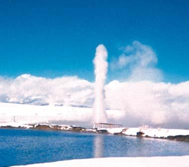
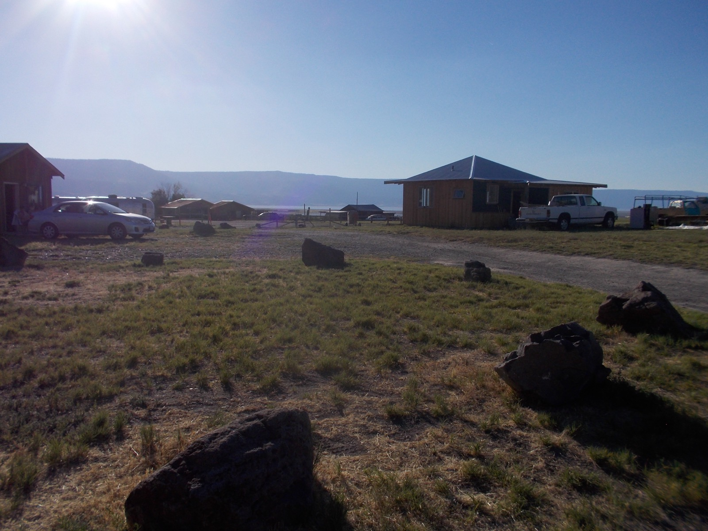

Soak It In: A Rider's Guide to Lake County's Hot Springs
For a few years, if you drove US-395 just north of Lakeview and asked a local where to soak, they'd point you toward a place with neon signage and a roadhouse menu. This year, that same spring reclaimed the name it's carried since 1923. Under new ownership, the property has returned to its original historic name, Hunter's Hot Springs, leaning back into the roadside nostalgia and the century of geothermal history that made this spot famous in the first place. The on-site restaurant, now called The Geyser Room, changed hands again in August under new management, according to state liquor licensing records.
It's a fitting moment to take stock, because Hunter's isn't the only hot water Lake County has to offer. This is one of the most geothermally active corners of Oregon, and for cyclists rolling through it on the Tour de Outback, that's not just trivia. It's recovery, built right into the landscape.
An Accidental Geyser, a Resort, and a Name That Stuck

Public domain photo via U.S. DOT / Wikimedia Commons
Hudson's Bay Company trappers found these springs back in 1832 and wrote in their journals that the water was unbearably hot to the touch. Nobody built anything on the site until 1919, when a Minneapolis developer named Harry Hunter saw the springs and pictured a health resort. He bought 40 acres in 1923 and, unsatisfied with how much water the natural springs alone could deliver, drilled three wells looking for more. All three came back up as geysers. One of them still erupts every 60 to 90 seconds today, flinging 200-degree water up to 60 feet into the air. Locals named it Old Perpetual, and it remains the only continuously erupting geyser in the Pacific Northwest.
The resort Hunter built opened in 1925, added a medical clinic by 1929, and changed hands in 1943 for a motel and lounge expansion. The geyser itself went quiet for several years after June 2009, a casualty of nearby geothermal drilling, before returning to its old rhythm by 2015. Through all of that, the property carried the Hunter name until a rebrand a few years back tried on the Neon Cowboy instead. Now it's home again. The outdoor mineral pool, fed by natural artesian wells at around 104 degrees with no added chemicals, sits open to hotel guests around the clock and to the public on limited afternoon hours. It's 2.5 miles north of downtown Lakeview, close enough that riders staying at the Lake County Fairgrounds for Tour de Outback could make it a short drive after checking in.
A County That's Quietly Full of Hot Water

Photo by Kingofthedead, CC BY-SA 4.0 / Wikimedia Commons
Hunter's gets the name recognition because it sits on the highway, but Lake County's geothermal activity runs a lot deeper than one geyser. Roughly 67 miles northeast, inside Hart Mountain National Antelope Refuge, a stone-walled soaking pool sits at the base of Warner Peak, fed by a spring that stays around 100 degrees year-round. It's free, first-come, and there are 25 primitive campsites nearby with fire rings and vault toilets, no drinking water, no cell service, and no light pollution. You get there via a 4.4-mile stretch of Hot Springs Road that's fine in a passenger car through summer and early fall. Soaking here at night, under skies that register Bortle 1 on the astronomers' darkness scale, is as close as this stretch of Oregon comes to a religious experience.
Southeast of Plush, near Crump Lake, the Crump Geyser Geothermal Area feeds Fisher Hot Springs, where source water running around 140 degrees is piped into a couple of soaking tubs overlooking the Warner Valley. It's one of seven springs in that geothermal field, and the area once hosted a human-made geyser considered the largest continuously erupting one of its kind in the country. And down near Paisley, Summer Lake Hot Springs runs a century-old bathhouse alongside three outdoor rock-walled tubs, with the main artesian source holding steady around 123 degrees. RV and tent sites sit close enough to the water that a lot of visitors plan for one night and end up staying three.
Add it up and you get four distinct hot spring experiences inside one county roughly the size of Connecticut and Rhode Island combined, ranging from a roadside geyser resort to a soaking pool you might have entirely to yourself under a blanket of stars.
Why This Matters for Anyone on a Bike
Distance riders have known for years that heat and water do something useful for tired legs, and the research backs it up. Warm-water immersion triggers vasodilation, opening up blood vessels and increasing circulation, which helps deliver oxygen and nutrients to muscle tissue that just spent hours under load. A controlled study published in the journal Physiological Reports found that hot water bathing for up to ten minutes after training sessions, sustained over four weeks, improved maximal isometric strength gains in athletes without dragging down their aerobic or anaerobic conditioning. Separate research on acute post-exercise bathing, in the 25-to-45-minute range, has shown measurable benefits for recovering muscle strength and limiting exercise-induced muscle damage.
Heat also increases muscle pliability, which is a clinical way of saying your legs feel less like rebar the next morning. Combine that with the buoyancy of a soaking pool, which takes gravitational load off joints that just absorbed 50 or 100 miles of washboard gravel, and the mineral content of Lake County's springs, sodium chloride, sulfate, and traces of magnesium depending on the source, and you've got a recovery ritual that costs nothing but the drive. There's a mental component too: warm water immersion shifts the body toward a parasympathetic, rest-and-digest state, which is exactly what a rider needs after a century route that started before sunrise and ended somewhere past Warner Canyon.
Building It Into Your Tour de Outback Weekend
None of this requires much planning. Hunter's is a ten-minute drive from the Lake County Fairgrounds, making it the easiest post-ride stop for anyone camping at the event. Riders who want to turn the weekend into a longer trip have real options: soak at Hunter's the evening you roll in, then drive out to Hart Mountain the following night for a soak under some of the darkest skies in the country, or swing south toward Summer Lake and stretch the whole thing into three days instead of two. The routes that make up Tour de Outback already climb past Warner Canyon Ski Area and roll through the high desert basins that feed these springs. The soaking is just the part that happens after you clip out.
Ride the Outback, Then Soak It Off
The Oregon Tour de Outback returns June 26, 2027, with five routes through the same high desert that's kept Lake County's hot springs running for thousands of years. Registration hasn't opened yet — get on the list and we'll email you the moment it does.
Get Notified